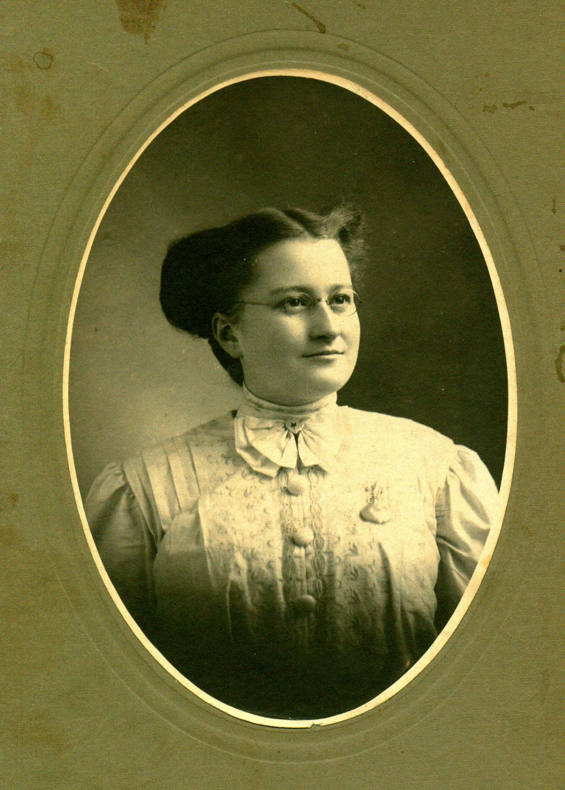
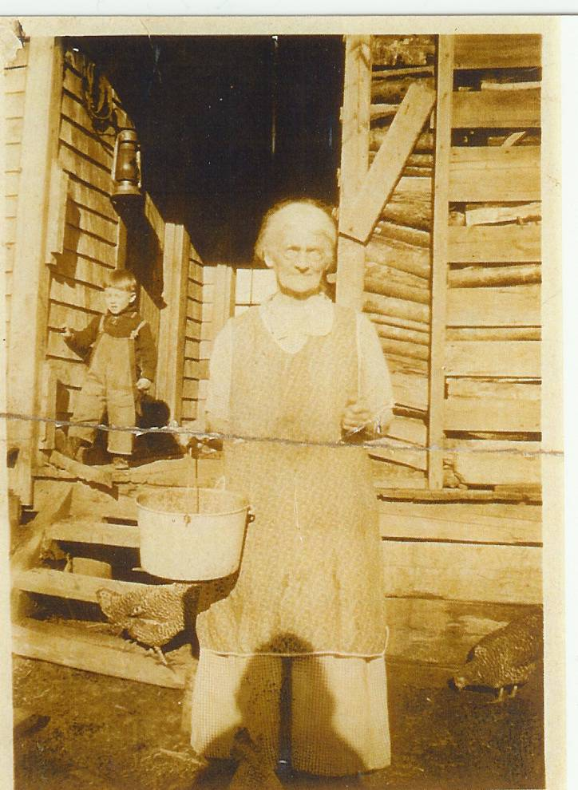
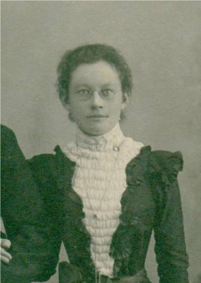
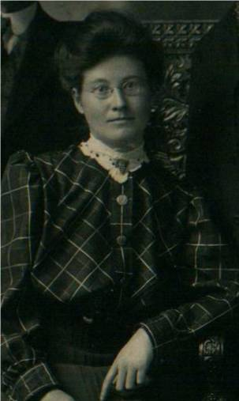

Glendenning Family Memories
JANE ELIZABETH JARDINE WATLING

Jane Watling was born, presumably at home, at the Meadows, Upper Black River, New Brunswick on February 28, 1890. Although her name was Jane, Dad always called her Jean; this may account for the fact that the Watling side of the family continued to call her Jane (or Janie as Uncle Ern called her) while the Glendenning side of the family referred to her as Jean. I remember Mum saying that Dad referred to her as "Jeannie with the light brown hair". St. Stephen's Presbyterian Church (now United Church) shows her name as Jane.
Jane was the second youngest of a family of eight born to Jubal Watling and Grace MacAskill MacDonald. She was named after Jane Elizabeth Jardine who married Donald Cameron (Cameron Russell’s grandmother) A few years ago when visiting Francis and Phyllis MacNaughton in Vancouver, Phyllis showed a framed, handmade embroidery (?) made by Jane Elizabeth Jardine.
When Mum was about 10 years old, the family moved from the Meadows to the Branch. We know that she went to school in Upper Black River; it is unlikely that she went or went for very long to the school at the Branch. I remember Mum saying that her mother would take her from school to help Aunt Elspie MacNaughton who had a young and growing family and needed help.
Portland, Maine
Jane Watling arrived in Portland on January 24, 1908 just prior to her 18th birthday. In the same way as Maritimers now go to Ontario, points west or overseas, in those days young people went to "the Boston States". Young women frequently were employed to look after children and to do housework.
The exact date that of her arrival in Portland is known only because she arrived there on the day that the City Hall burned. I have since confirmed, through a phone call to the Portland Public Library, that the fire occurred on January 24, 1908. (I also recalled Mum saying that she could have gone to Walter Glendenning's funeral (which was on February 14, 1908.)
Jane arrived at the train station in Portland in the early morning and waited for her brother, George, to meet her. Apparently he came to the station but did not recognize her. She had grown up while he was away from Black River. Her brother Jack also worked in Portland at that time and likely there were many cousins. We also know that her brother Jim worked in Portland in a chemist/pharmacy, and also in photography, but whether he was there at that time we do not know.
Among Mum’s possessions was an envelope, addressed in Dad’s handwriting and mailed from Wisconsin, showing Mum’s address as 130 Emery Street, Portland.
We think that Mum worked for a Mrs. Jennison and looked after her two sons, Marshall and Brian. We do not know the dates. In 1952, John and Mary took their son, Frankie, to Boston to see a doctor. Mum and I went along. While there, we visited a friend of Mum’s (I believe it was Mrs. Jennison.) She lived on the second or third floor of a brick apartment building in Worcester near Framingham.
Friends
Among the friends identified through old family photos are the following:
Mrs. Jennison, I believe was the person Mum worked for when she went to Portland in 1908. Presumably Mother looked after the children - there appear to have been 2. Marshall Walker who was born, I think, in 1906; William Brackett who was born about 1908 and graduated from high school in Portland in 1925. In 1949, I think, John and Mary took their son, Frankie, to a doctor in Boston. While there we visited Mrs. Jennison who then lived in an apartment building in Worcester, Mass. Just outside Boston.
The Ratcliffe family, with whom Mum maintained correspondence after returning to Canada, family was living at 3437 Wildwood Ave., Cleveland, Tenn. In 1913. They appear to have had at least two children: Bernice Naomi born in 1913; Vance born in 1915.
The Goldie Kennedy family lived at one time in New Haven, Conn. Based on the photos, they likely also lived in Tennessee. We know of at least two children: Bernice born in 1912; Harmas (?) Lee Reginald born in 1912 – 1914. One photo is of Harmas Lee Reginald Kennedy and Vance Ratcliffe was taken when they were youngsters (under two years of age). Obviously the families were friends.
Mr. and Mrs. Courtney and a son Lennie who likely lived at the time in Tennessee or Alabama.
Mrs. Lawrence who appears to have had at least 4 children: Helen, born about Jan or Feb. 1914; Henry (perhaps also known as Harry) the oldest of the children; John born Nov. 23 1909; Elizabeth born in Jan or Feb 1914
Nellie Fountain provided a photo taken in Portland, Maine.
Millie Tredenic, I believe, was from Prince Edward Island. The phone book shows people by that name living on PEI today
In an autograph album we find the good wishes from the following:
Amy Usher, Bonny Eagle, Maine - Dec 29, 1910
Alta M. Usher, Bonny Eagle, Maine - Dec. 29, 1910
LaMont C. Usher, Bonny Eagle, Maine - Dec. 29, 1910
Gladyce Pearle Beane(?), Readfield, Maine - Jan. 2, 1911
Willis A. Sawyer, West Buxton, Maine
Leola S. Blake, Buxton Ctr. Maine - Jan 31, 1911
Frances(?) Davis, Oct. 13, 1911
Goldie Ratcliffe, Goforth Camp #2, 3437 Wildwood Ave, Cleveland, Tenn.
Mae Franke (Miss), Pleasant River, Queens Co, Nova Scotia but also gives Parksville, Polk Co., Tenn. - April 27, 1911
Mrs. Stanley Franke, Pleasant River, Queens Co. Nova Scotia but also Parksville, Polk Co, Tenn. - April 27, 1911
M. J. Miller, River Louison, Rest. Co, NB - June 27, 1913
Hughey (Mac MacDonald). Kennys Hill, Wed. Nov. 13, 1912
My mother wrote poetry. Family members remembered seeing some of it but it appeared that none had survived. At a family reunion a few years ago, Ruth (MacNaughton) Lewis mentioned having a poem written by my mother and, subsequently, she sent the above poem to me. This poem was written about a month after her mother died.
MOTHERS
The lamp is lit in the window
And back of it is her chair
And as I look across, it seems
She surely must be there.
I picture too her little room
So very neat and snug
Her very fingers made it so
Oh yes, the braided rug.
The cushion on her rocking chair,
The quilt upon her bed,
Her dresser with the many things
Her very hands had spread.
I pull apart the curtains
Her mark again I see
Her dresses hung up neatly
Yes, as neatly as can be.
And as I sit and ponder
A picture there I see
It’s of my Mother’s Mother
Whose room it used to be
Yes, patient, tireless Mother
Who gave to their world their best
Your children call you blessed
God’s love made manifest.
And when my work on earth is done
And I have crossed the Bar
God grant that I may enter in
Where those dear Mothers are.
JWG
Oct. 1934

Undated photo of Grace (MacDonald) Watling

Letter from Elmer Glendenning to Jane Watling posted January 25, 1910
PLATE 9: Jane Watling’s Siblings
Photo not available
Christina Catherine Watling
1876-1956

Elspeth Jardine Watling
1878-1943

Jubal George Watling
1881-1958

Janet MacDonald Watling
1883-1977
John MacDonald Watling
1886-1953

James Alexander William Watling
1888-1983
Jane Elizabeth Jardine Watling
1890 - 1964

Donald Ernest Watling
1892-1974